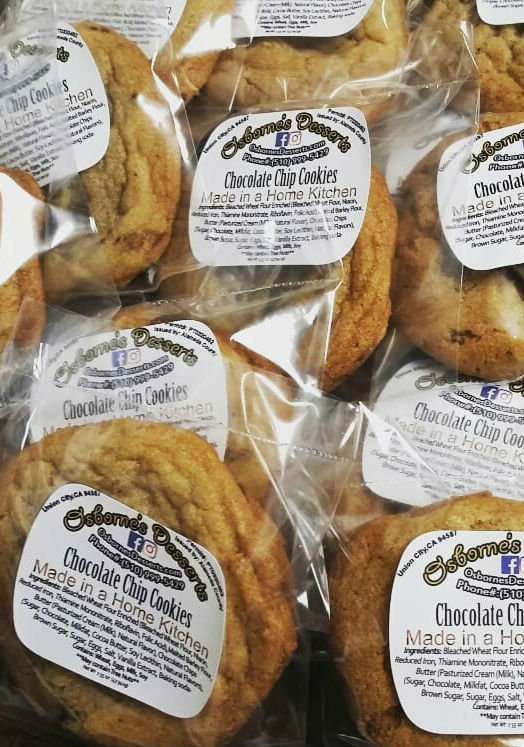

Osborne’s Desserts started with a recipe for Chocolate Chip & Walnut Cookies from my Grandma that she had clipped out of an old newspaper. From there I made a few changes to achieve the texture,taste,and consistency I preferred. It was a lengthy journey, but after 11 months I had finally come up with a product I felt quite proud of. After initial taste testing from Friends & Family, I now felt confident that my cookies could be more than just an after dinner treat for my Family & I. Now after months of planning, getting permitted & licensed, and forming relationships with local restaurants. I am finally able to share my desserts within the Alameda County & Santa Clara County Areas, Thank you so much for your support!
-Kevin Osborne , Owner of Osborne's Desserts
